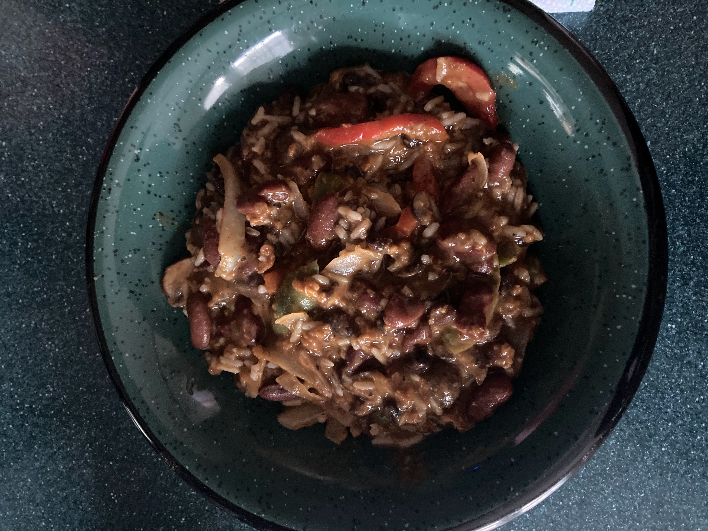

Simple Chili

Can't get any easier than this.
Ingredients
- 1 can of kidney beans
- 1 can of black beans
- Violife mozzarella shreds (or another mozzarella of your choice)
- 1 green bellpepper
- 1 red bellpepper
- Chipotle flakes.
- 1 onion
- 2 packages of Ben's Ready Rice Long Grain White Rice (or another rice of your choice)
Steps
- Finely chop onion. Add to pan and stir-fry for 10 minutes.
- After the onions have been in the pan for 5 minutes: cut bellpepers in strips. Add to pan with onions and stir-fry for 5 minutes or until slightly crispy. Add a dash of chipotle flakes while cooking.
- Combine cans of beans in a pot. Just before boiling, add mozzarella cheese to taste. Cook until boiling.
- Cook the Ready Rice packages for 90 seconds each.
- Combine the rice and all ingredients from the pan into the pot with beans. Enjoy!